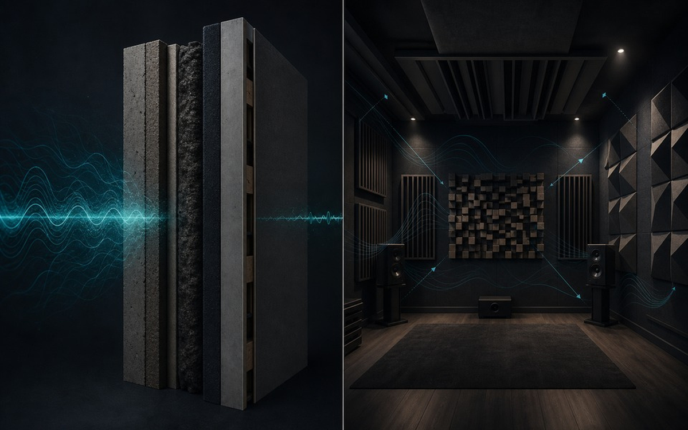

Звукоизоляция vs акустика
В быту слово «акустика» часто означает всё сразу: и чтобы соседей не слышать, и чтобы в комнате приятно разговаривать. В инженерном смысле это две разные задачи. Первая — не пускать звук через стены и перекрытия. Вторая — управлять тем, как звук живёт внутри комнаты. Путать их — значит покупать не то и ждать невозможного.

Звукоизоляция: звук не должен проходить сквозь стену
Звукоизоляция — это снижение передачи звука через ограждения: стены, потолок, пол, двери, окна. Задача — не слышать соседей и не мешать им. Решается массой конструкции, многослойностью, упругими прослойками между жёсткими элементами и герметизацией узлов — чтобы звук не обходил преграду через щели и мостики.
Толстая входная дверь, перегородка с воздушным зазором, плавающий пол, звукоизоляционный потолок — всё это про звукоизоляцию. Материалы работают в толще конструкции или на границе между помещениями. Они не «лечат» гул внутри комнаты — они уменьшают обмен звуком с соседями и улицей.
Внутренняя акустика: как звук ведёт себя внутри
Внутренняя акустика — про качество звука в самой комнате. Голос гулко отражается от голых стен? Видеозвонок даёт эхо? В кинотеатре бас «гудит» в углах, а речь неразборчива? Это время реверберации, отражения от поверхностей, стоячие волны на низких частотах. Решается формой помещения, поглотителями в нужных местах, иногда диффузорами и правильной расстановкой оборудования.
Ковёр, шторы и мягкая мебель слегка меняют внутреннюю акустику — комната перестаёт «звенеть». Но соседей за стеной они не изолируют: звук к ним идёт через конструкцию, а не через отражения в вашей комнате. Подробнее о гуле — в статье почему гудит комната.
Ситуация
Домашний кинотеатр: соседи жалуются на бас по вечерам, а внутри комната при этом гулко «звенит».
Что проверяет ЦИА
Две задачи сразу: звукоизоляция ограждений и виброразвязка сабвуфера плюс внутренняя обработка для баса и отражений — формат спецпроекта.
Что нужно обычной квартире
В большинстве случаев запрос — звукоизоляция: соседи, дети сверху, улица. Внутренняя акустика становится темой, если после ремонта в пустой комнате неприятно разговаривать — слишком «баня». Часто помогает мебель и текстиль; для постоянной проблемы — расчёт поглотителей. Если сомневаетесь, опишите симптом: «слышу соседей» или «в моей комнате эхо» — от ответа зависит формат работы.
Студии, кинотеатры, переговорные
Здесь почти всегда нужны обе линии работы. Студия или кинотеатр — это и не мешать окружению, и получить чистый звук внутри. Переговорная в офисе требует звукоизоляции от open space; сам open space чаще страдает от гула и плохой разборчивости речи — это внутренняя акустика, а не толстые стены между столами.
Для домашнего кинотеатра бас — отдельная головная боль: низкие частоты обходят тонкие перегородки и передаются вибрацией пола. Здесь без комплексного подхода не обойтись.
Примеры, которые легко запомнить
Металлическая дверь в квартиру — звукоизоляция. Поролоновые пирамидки на стене домашней студии — внутренняя акустика (и то не лучший выбор без расчёта). Двойное остекление — звукоизоляция от улицы. Книжный стеллаж за спиной при видеозвонке — рассеивание отражений, внутренняя акустика. Шумоизоляционная вата в перегородке — звукоизоляция. Гулкий подкаст в спальне — чаще внутренняя акустика плюс, возможно, изоляция ограждений; см. студия подкаста.
Почему маркетплейс вводит в заблуждение
Товары с пометкой «акустические» часто продаются как универсальное средство. Поролон, «пирамиды», тонкие панели на клей — это про отражения внутри, не про соседей. Для звукоизоляции нужны конструкции: масса, зазоры, узлы, герметизация — и это проект, а не набор плиток на стену.
С чего начать, если задача смешанная
Опишите обе проблемы: что слышите снаружи и как звучит внутри. На дистанционной оценке или замере инженер разделит приоритеты: иногда сначала звукоизоляция (соседи мешают спать), иногда внутренняя обработка (подкаст без эха). При капитальном ремонте обе задачи закладывают в один проект — но слои и узлы разные, и это важно не смешивать.
Частоты: почему бас — отдельная головная боль
Низкие частоты длинные: они обходят тонкие перегородки и передаются вибрацией по полу и стенам. Для звукоизоляции баса нужны масса, развязка и правильные узлы — одного слоя «шумоизоляции» на стене мало. Для внутренней акустики бас создаёт стоячие волны в углах комнаты — комната «гудит» на отдельных нотах. Поэтому домашний кинотеатр с мощным сабвуфером — это всегда две линии работы: не мешать соседям и управлять низом внутри. Подробнее — в статье про акустику домашнего кинотеатра.
Как не переплатить за не то
Перед покупкой спросите себя: проблема «слышу соседей» или «в моей комнате неприятно говорить»? Первое — конструкции ограждений, проект, узлы, герметизация. Второе — поглотители, расстановка, иногда перестройка углов; для серьёзных задач — спецпроект. Смешивать слои «на всякий случай» — значит увеличить толщину стен без гарантии результата. Разделение задач на старте экономит и бюджет, и нервы на приёмке.
Полезные материалы по теме
Если беспокоят соседи — начните с шума от соседей и ударного шума с потолka. Если комната «звенит» внутри — почему гудит комната и студия подкаста. Для кинотеатра нужны обе линии — см. акустику домашнего кинотеатра.
Звукоизоляция квартиры и офиса — через проектирование с узлами. Внутренняя акустика студий — формат спецпроектов. Диагностика начинается с дистанционной оценки или замера. Герметизация и мостики — отдельная статья.
Частые вопросы
Оставить заявку
Опишите помещение и задачу — подскажем формат работы ЦИА. Если вы прошли Проблемомер, поля заполнятся автоматически.
Задача отправлена